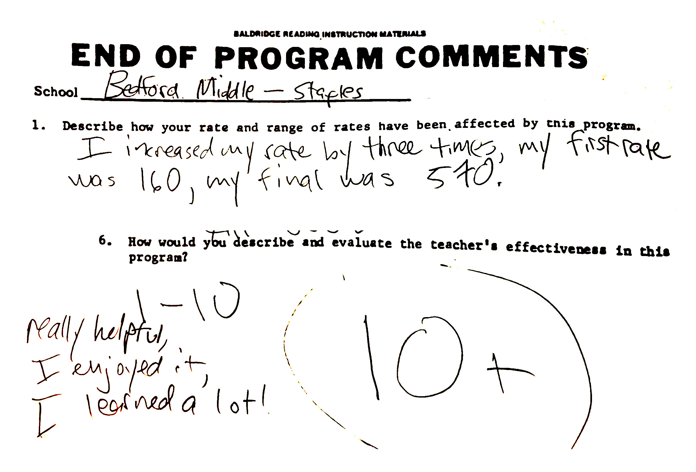
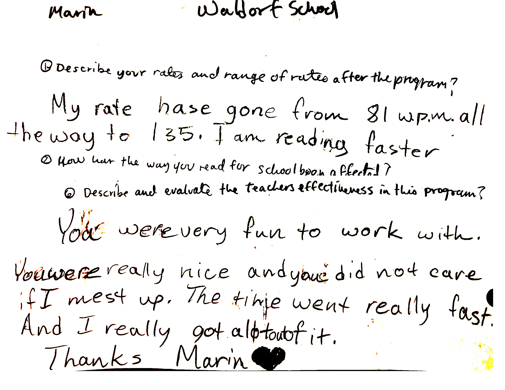
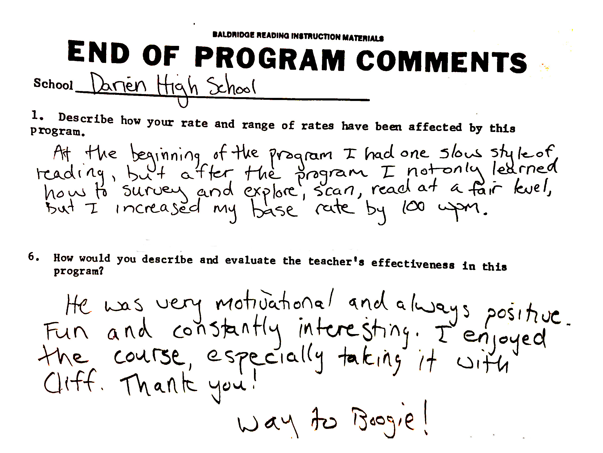
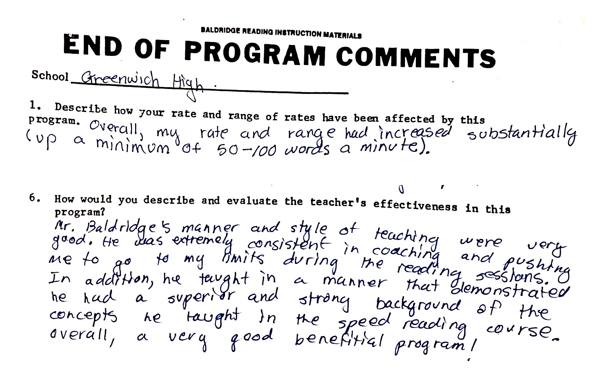
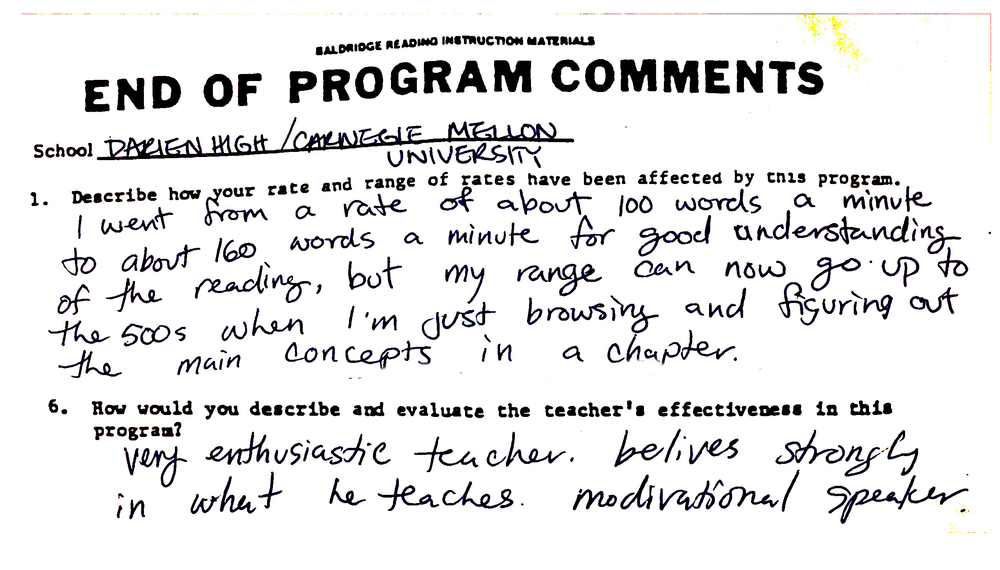
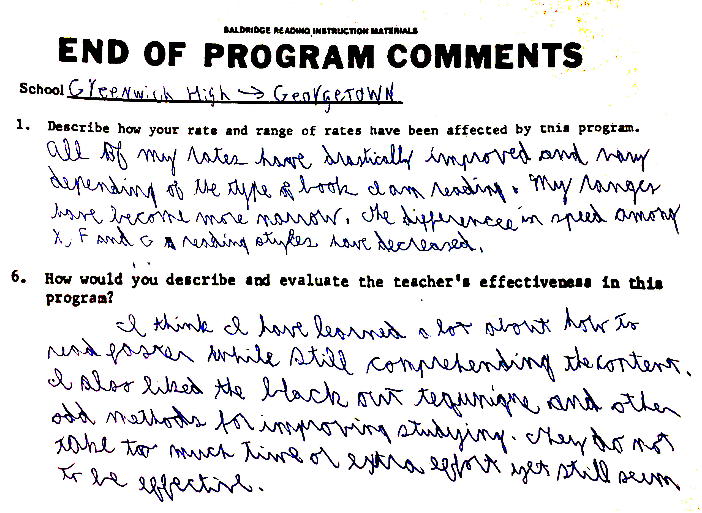
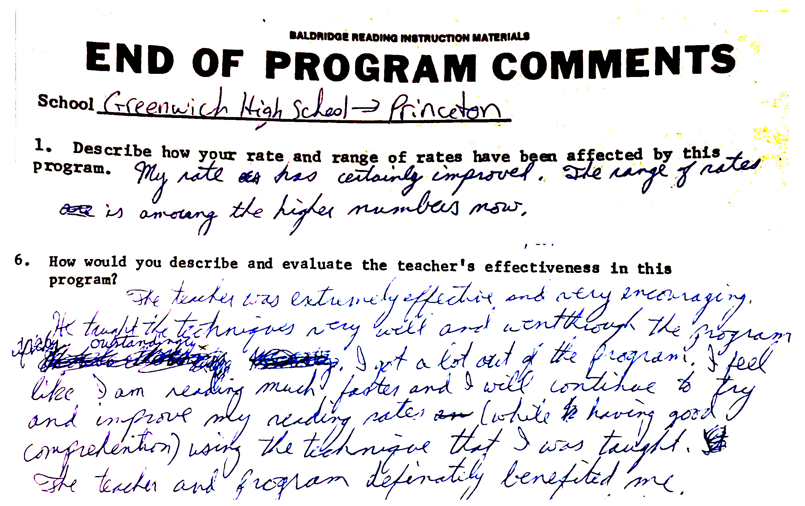
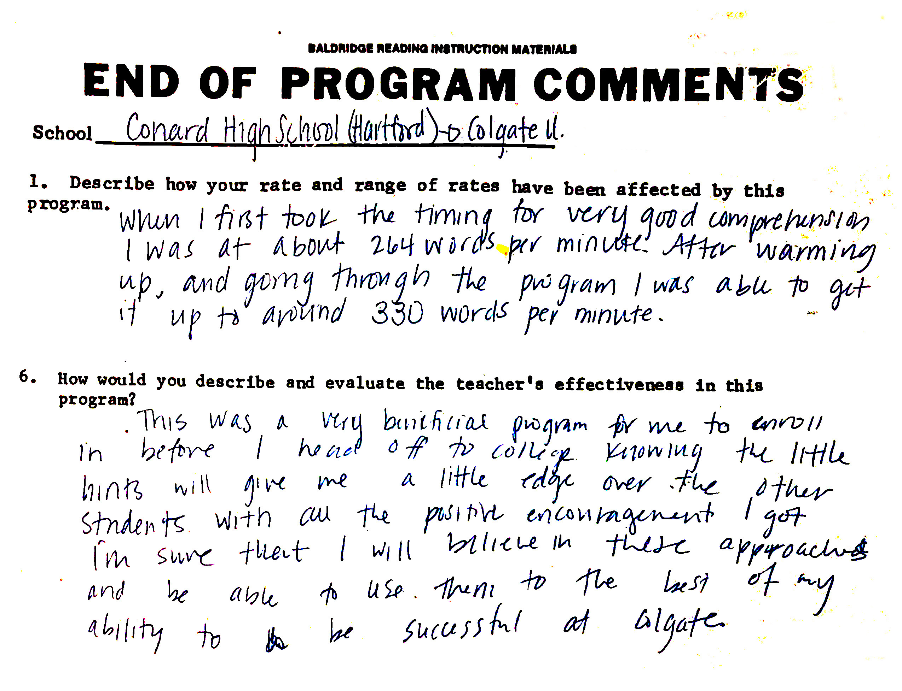
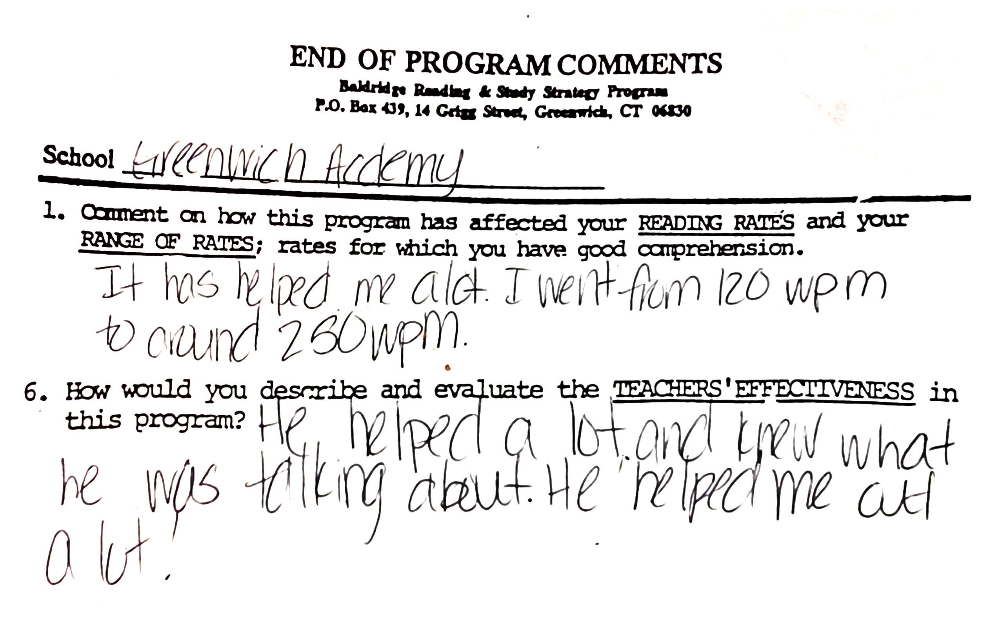

Student Reference Letters
A portion of the hundreds of students at private schools, public schools, private universities, and Ivy League schools who have completed the 4-hour Baldridge Reading and Study Strategy Program from 3rd grade through 12th grade and college — conducted by Cliff Baldridge.
Lower & Middle School Students — Grades 3–8

"I increased my rate by three times — my first rate was 160, my final was 570. Really helpful, I enjoyed it, I learned a lot! 10+"

"My rate has gone from 81 w.p.m. all the way to 135. You were very fun to work with and I really got a lot out of it. Thanks ♥"
High School Students — Grades 9–12

"I not only learned how to survey and explore scan, but I increased my base rate by 100 wpm. He was very motivational and always positive. Fun and constantly interesting. Thank you! Way to Boogie!"

"My rate and range increased substantially — up a minimum of 50–100 words a minute. Mr. Baldridge demonstrated a superior and strong background of the concepts he taught. Overall, a very good beneficial program!"
College-Bound & University Students

"I went from about 100 words a minute to about 160 wpm for good understanding. My range can now go up to the 500s when browsing. Very enthusiastic teacher. Believes strongly in what he teaches. Motivational speaker."

"All of my rates have drastically improved. The techniques did not take too much time or extra effort yet still seem to be very effective."

"The teacher was extremely effective and very encouraging. I feel like I am reading much faster and will continue to improve my reading rate with good comprehension using the techniques I was taught."

"I went from about 204 wpm to around 330 wpm. This was a very beneficial program before heading off to college. Knowing the little hints will give me a little edge over the other students."
Parent Testimonials
"My own son was able to more than double his reading speed and substantially increase his comprehension level as well as do better on his test scores. I can wholeheartedly recommend this program for all students."
"I took the Baldridge Program for college and it helped both academically and in my legal career. Three of my children are now enrolled at Ivy League Universities. Our daughter managed to finish all of her Summer reading list. Thank you for your much needed service."
"Our three children each enrolled at different ages and all benefited greatly. Mary ended up at the head of her class — she is now at Yale. Our family is greatly indebted to the Baldridge service."
